Te acompañamos en cada viaje
Postergar no es falta de ganas, quizá es no saber por dónde empezar. Cada detalle está pensado de antemano para que puedas relajarte y disfrutar.
Una selección pensada para viajeros que buscan confort, sin resignar autenticidad.
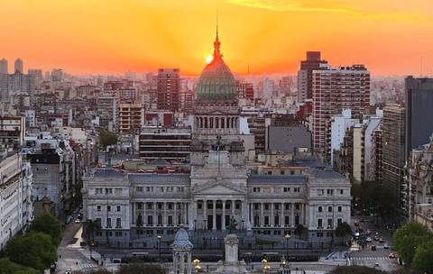
Una ciudad que combina historia, cultura y vida porteña en cada esquina: la puerta perfecta para empezar o cerrar tu viaje por Argentina.
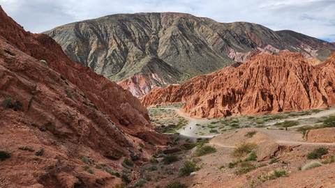
Un recorrido por todo el Noroeste argentino: quebradas y cerros de colores que se entrelazan con pueblos, tradiciones vivas y una gastronomía que se disfruta con calma.
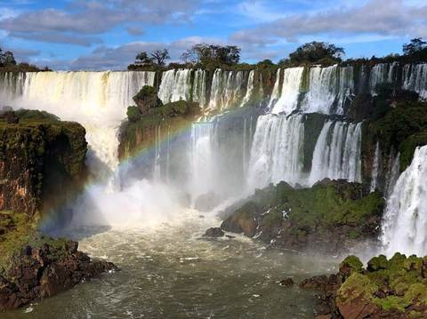
Te acompañamos hasta las pasarelas, frente a saltos de agua que no vas a olvidar. Selva, vapor y arcoíris: una de las maravillas naturales más impresionantes del país.
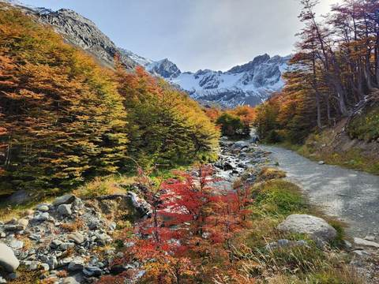
En el fin del mundo te esperan bosques otoñales, senderos entre montañas nevadas y un silencio que solo la Patagonia puede dar.
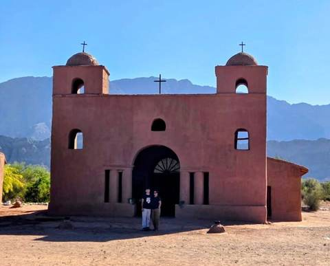
En el oeste de Catamarca, pueblos de adobe, iglesias centenarias y paisajes que te invitan a bajar el ritmo y mirar despacio.
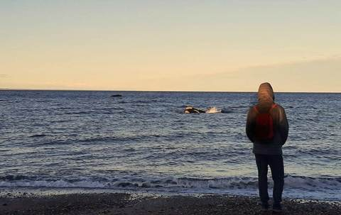
Ballenas, costa patagónica y naturaleza en estado puro: la puerta a uno de los encuentros con la fauna marina más increíbles de Argentina.
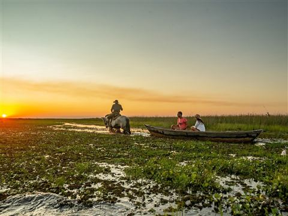
Uno de los humedales más grandes del mundo, en el corazón de Corrientes. Yacarés, carpinchos y cientos de aves que se dejan ver desde la canoa, al ritmo lento de las lagunas.
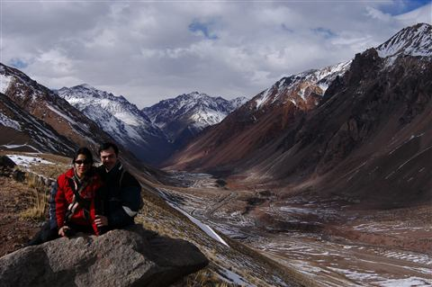
Alta montaña, viñedos al pie de la cordillera y cielos enormes: del camino al Aconcagua a las bodegas, un viaje para mirar lejos y brindar sin apuro.
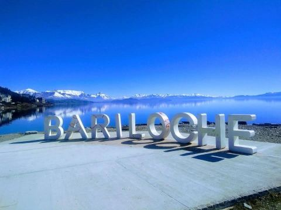
Lagos transparentes, bosques andinos y pueblos de montaña unidos por la Ruta de los Siete Lagos: un recorrido para disfrutar sin apuro, con chocolate caliente al final del día.
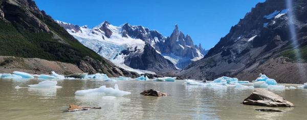
Frente al glaciar Perito Moreno y a los pies del Fitz Roy: hielo milenario, senderos con vistas que quitan el aliento y la Patagonia austral en su versión más imponente.
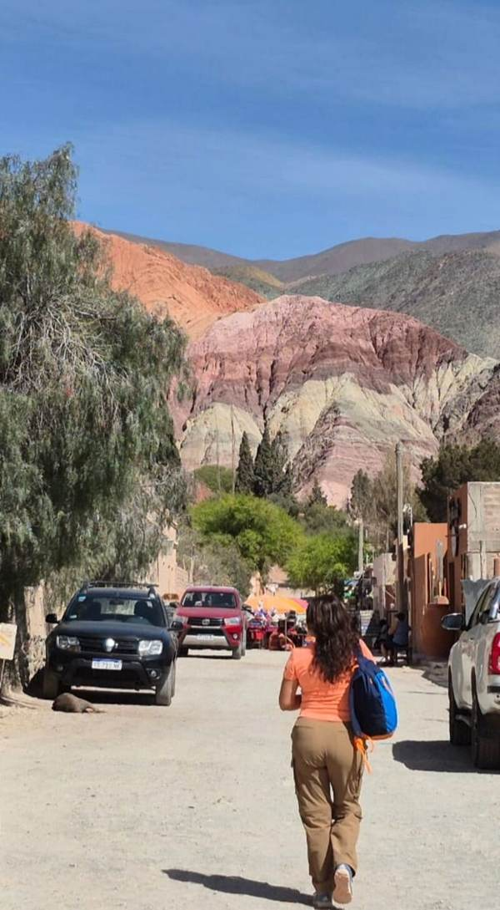
Somos JC TRAVEL, una agencia de viajes a medida por Argentina: profesionales de turismo y, por encima de todo, viajeros incansables.
Diseñamos experiencia para quienes no solo quieren viajar, sino realmente vivir el destino.
Viajar no es solo tachar un lugar en un mapa, es conectar, caminar despacio para respirar la naturaleza, escuchar con respeto los secretos de la historia local y sumergirnos en la cultura viva del lugar.
Creamos este espacio para diseñar tu viaje ideal.
Contanos qué viaje estás soñando y armamos juntos el primer paso.